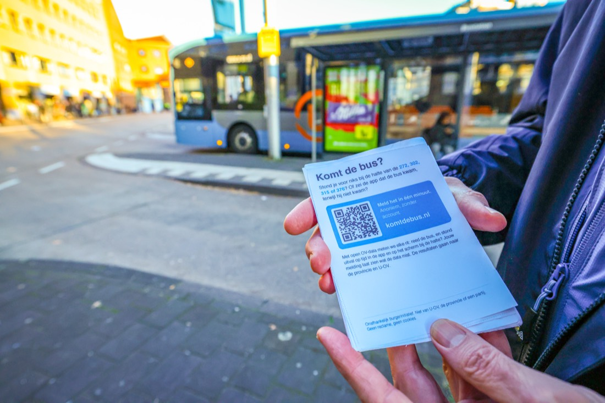

Vandaag in de provincie Utrecht
Alle U-OV-lijnen. Bijgewerkt: onbekend.
Lijn 272, 302, 315 en 376
Deze vier lijnen volgen we rit voor rit.
Gegevens laden…
Halte nu gesloten
Staat de bus hier in de app terwijl de halte dicht is? We meten of de reisinformatie dat meldt.
Meld wat jij meemaakt
Bus niet gekomen, of klopte de informatie niet? Noem de datum, tijd, lijn en halte, en wat de app of het scherm liet zien. Ik leg elke melding naast de ritdata. Meldingen over andere lijnen zijn ook welkom.
"Ik sta regelmatig een half uur buiten te wachten op een bus die toch niet blijkt te komen."

Een klacht kun je ook bij U-OV indienen; dat telt mee in hoe de provincie de vervoerder beoordeelt.
Meer weten
Hoe we meten, en de norm
Gegevens laden…
Dit is geen reisplanner: je ziet hier hoe vaak de informatie over je lijn klopte. We lezen alleen openbare reisinformatie: elke 2 minuten waar de bussen rijden, elke 5 minuten welke ritten vervallen, en elke dag de dienstregeling.
Wat betekenen de groepen?
- Gereden
- We hebben de bus zien rijden.
- Ingekort
- De bus reed, maar niet de hele route: de vervoerder meldde een deel van de haltes als overgeslagen. Vaak keert een bus die te laat is eerder, om de terugrit te halen. Ook een rit die onderweg stopt en daarna wordt geannuleerd, telt als ingekort. Wie bij die haltes wacht, ziet de bus niet komen.
- Uitval, op tijd gemeld
- De rit viel uit en dat stond vóór het geplande vertrek in de reisinformatie.
- Uitval, te laat gemeld
- De rit viel uit, maar dat stond er pas ná het geplande vertrek.
- Niet gemeld
- Geen bus gezien en geen melding: de rit waar je tevergeefs op wacht. Dit is een bovengrens, want een bus met een kapot volgsysteem rijdt wel maar lijkt uitgevallen.
- Geen meting
- Te weinig metingen, bijvoorbeeld door een storing bij ons. Telt niet mee.
Wat apps als de NS-app of 9292 laten zien, kan afwijken van de open data die wij lezen. De cijfers lopen vanaf 1 november 2026. Vanaf 13 december neemt 376 het grootste deel van 302 over.
De norm
Volgens de landelijke afspraken over reisinformatie (DOVA, Concessiebijlage Datasets OV, eis KV17.2) moet het bericht dat een bus een halte niet aandoet in 95% van de gevallen binnen zijn vóór de geplande tijd van de bus bij die halte.
De norm gaat dus alleen over bussen die niet komen, niet over alle ritten. Een lijn waarop bijna alles rijdt, kan de norm toch missen als de uitval die er is te laat gemeld wordt. Wij tellen bij een uitgevallen rit alle haltes, en bij een ingekorte rit de haltes die hij oversloeg.
Het Programma van Eisen van de Utrechtse busconcessies verwijst naar deze bijlage van DOVA (artikel 7.2.2). We hebben de provincie gevraagd te bevestigen dat de norm geldt. Ritten zonder bus én zonder melding ('niet gemeld') tellen hier niet mee; als dat echte uitval was, ligt het percentage lager. Wij kijken elke 5 minuten, dus een melding kan iets eerder binnen zijn geweest dan wij zagen.
Cijfers per dag, per lijn
Over dit project, en in de media
Een onafhankelijk burgerinitiatief van Wilbert van der Kruk, op basis van open data van OVapi. Niet verbonden aan U-OV, de provincie, Rover of een partij. Ik ben lid van Volt; dit project staat daar los van.
Pers en contact: pers@komtdebus.nl
In de media
- Eemland1 Actueel, 11 november 2026, interview van minuut 6:45 tot 27:16 (in de speler: −53:15 tot −32:44)
- Soester Courant, papieren krant, 11 november 2026, voorpagina en p. 7: "Busje komt zo"
- AD Amersfoortse Courant, papieren krant, 10 november 2026, regio p. 3: "Data-expert heeft genoeg van falende reisinformatie"
- NPO Radio 1, De Rode Draad, 9 november 2026, rubriek Tegendraads (na het nieuws van 20:30)
- AD Amersfoortse Courant, 9 november 2026: "Data-expert Wilbert wil uitval spookbussen in kaart brengen"
- Soester Courant, 2 november 2026: "Soester meet of de bus komt, en vraagt reizigers om mee te melden"
Geen cookies. Bezoeken tellen we anoniem met GoatCounter. Meldingen zijn zonder naam. Een melding staat alleen op deze site als de melder dat in het formulier aangaf, en pas nadat ik hem heb nagelezen; nooit met naam of e-mailadres. Een e-mailadres in het formulier is optioneel, alleen voor een vervolgvraag, en wordt nooit gedeeld.